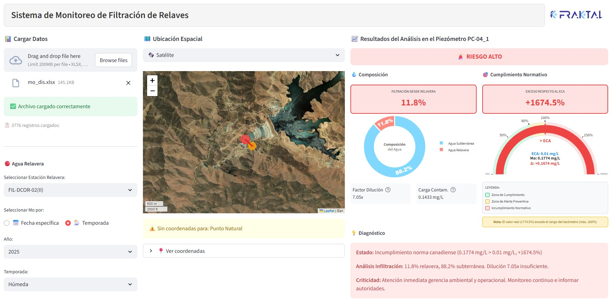

Selección y aplicación de trazadores ambientales para cuantificar filtraciones de relaves en acuíferos salinos
Cuando el fondo natural oculta la señal, los datos históricos permiten encontrar un trazador adaptado al sistema.
Cuando el fondo natural ya es salino, la señal de una filtración se esconde
Baja recarga, largo tiempo de interacción agua–roca y aguas salinas naturales elevan Na⁺, Cl⁻, SO₄²⁻ y CE. El agua asociada al relave también es mineralizada.
Cuatro verbos guían la ponencia
Presentar un enfoque adaptativo para seleccionar, validar y aplicar trazadores ambientales en la identificación y cuantificación de filtraciones de relaves en acuíferos salinos, integrado en una herramienta de gestión de datos.
EXPLICAR
Por qué la alta mineralización natural reduce la discriminación de la CE y de los iones mayoritarios.
IDENTIFICAR
Cómo el análisis sistemático de datos históricos señaló al Mo como el trazador de mejor desempeño local.
CUANTIFICAR
Aplicar un modelo de mezcla de dos componentes y las condiciones que controlan su confiabilidad.
IMPLEMENTAR
Automatizar el análisis en Fraktal System: rápido, reproducible y útil para el monitoreo.
El Mo surgió de una evaluación estructurada, no de una elección previa
Caracterizar
Integrar hidroquímica histórica, fuentes de agua, condiciones hidrogeológicas, direcciones de flujo y estaciones de monitoreo.
Ningún trazador es universal: su utilidad depende de las condiciones locales y de la caracterización de los componentes extremos.
Los trazadores convencionales pierden resolución en el fondo salino
SO₄²⁻ relave / fondo≈ 1 500 vs 500 mg/L: contraste insuficiente
Casi dos órdenes de magnitud de contraste
Contraste frente al fondo
≈ 1,2 mg/L en el relave frente a < 0,05 mg/L en el agua natural
Alta solubilidad
Se mantiene en solución como molibdato (MoO₄²⁻)
Predominantemente conservativo
Baja reactividad bajo las condiciones evaluadas
La clave no es que el Mo sea siempre el mejor trazador: los datos históricos revelan cuál discrimina en cada sistema.
Una señal útil es diferenciable y coherente en el espacio y el tiempo
Rangos representativos de Mo (mg/L, escala log)
De la concentración a la proporción de mezcla
de agua asociada al relave en el piezómetro gradiente abajo
± 3 PUNTOS PORCENTUALESUna estimación respaldada por evidencias, no una medición directa
Hidrogeología
Flujo y posición de estaciones
INTEGRADAHidroquímica
Consistencia histórica
INTEGRADAIsótopos estables
δ²H, δ¹⁸O y sulfato
LÍNEA INDEPENDIENTEAdsorción parcial del Mo
En materiales arcillosos podría reducir la concentración observada: posible subestimación del aporte.
Variabilidad de los extremos
La representatividad del relave y del fondo natural controla directamente la fracción estimada.
Incertidumbre analítica
Propagada en el balance de masa: ± 3 puntos porcentuales.
Reconocer estos límites fortalece, y no debilita, la interpretación.
Calculadora de mezcla de dos componentes
Mueva los extremos y la muestra para ver cómo cambia la fracción estimada y su incertidumbre. Valores iniciales: caso de estudio.
f = (Cm − Cn)/(Cr − Cn); σf por propagación de primer orden. Herramienta didáctica: el cálculo operativo se realiza en Fraktal System.
Fraktal System: el método convertido en un flujo reproducible

Reproducible
Estandariza las operaciones repetitivas bajo reglas comunes.
Trazable
Conserva las entradas y permite la revisión por distintos usuarios.
Comparable
Contrasta campañas y estaciones; se actualiza con cada nuevo dato.
Tres conclusiones que responden a los objetivos
El fondo salino oculta la señal
En acuíferos salinos, la CE y los iones mayoritarios pierden capacidad de discriminación.
Los datos revelan el trazador
El Mo fue la señal más diferenciable y permitió estimar aportes del orden de 10–11 % gradiente abajo.
Del dato a la decisión
Trazador, modelo conceptual, validación y automatización: información oportuna y reproducible.
El enfoque es transferible; el trazador no lo es de forma automática.
En cada proyecto debe repetirse la evaluación de contraste, conservación y representatividad de los extremos.
GRACIAS
Luisa Casadiegos · WES Perú